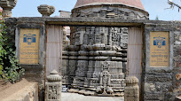
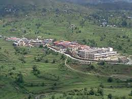

Start your Vacation

Baleshwar Temple
One of the oldest temples in Champawat.Baleshwar temple,dedicated,to lord shiva was built around 10th century AD by the rulers of chand Dynasty.
READ MORE
Banasur Ka Kila
An ironically constructed relic, on the name of a boon bestowed Banasur, the man with a thousand arms, whereas the fort gives an air of amourous nature, and is the perfect spot to watch the origins of Lohaghati river.
READ MORE

Shyamala Tal
Situated at an altitude of 1500 meters in the foothills of garhwal Himalayas, Shyamla Tal is a beautiful lake town with umoteen amounts of greenery and freshness to it.
READ MORE
Ek hathiya ka Naula
One of those structures, that is known not only because of its uniqueness, but also for its creators. A single handedly carved architectural marvel,situated about 5km away from champawat.
READ MORE
Kranteshwar Mahadev Temple
If you are of straying away from the usual mainstream tourist spots, you will choose Champawat
READ MORELohaghat
Lohaghat is an immensely popular town,about 14km from Champawat, and is known for its extremely rich and unspoilt natural beauty.
READ MORE
Nagnath
The particular hilly towns of North India, worship Lord Shiva of the Hindu mythogy as their chief deity.It is believed that Shiva is the conqueror of death, an ddelivers all his devotees from every possible trouble and makes their life peaceful and successful.
READ MOREMaa Barahi Temple
The cave temple is intriguing. The story behind 'Maa Barahi'is nice.A good place for religious people. The locals hold a fair during the festival of Rakhi. The surroundings are not very clean.
READ MORE
Mayawati Ashram
Mayavati Ashram or the Advaita Ashram, the dream land of Swami Vivekhand, the great world wide popular monk,philospher, a major force in the revival of Hinduism in the modern india.
READ MOREGolju Devta
Golu Devta is a deity of enormous significance in the area, and is known to deliver justice and instill faith in his populace as their ruler prince.
READ MORE